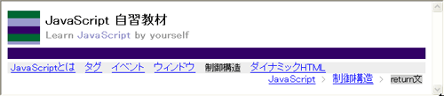

HTML 作成演習
HTML Exercises
1 演習全体の説明
JavaScriptの自習用Web教材の一部を作成することで、HTMLを記述する演習を行います。
作成するページが、サイトの中でどういう位置にあるかを理解するため、Web教材全体の構成図とページの表示例を次のリンクに示します(別のウィンドウに表示されます)。
ページ全体構成図には、ページ間の移動をどのように提供するかが赤で記されています。3種のナビゲーションリンクを提供します。
- 大項目へのリンクは各ページの上部に置く．
- 小項目のリスト(現在表示されているページを含む大項目中の小項目)をページの左側に置く．
- ページ階層中の，現在ページの位置(トレイルリスト)を上部に表示する．
このページをレイアウトするには、stylesheetを使います。
それ以外に、tableタグやframeタグを使う方法があります(した)が、
それは好ましい方法ではありません(資料として下には記述を残してあります)。
演習で作成するページ内容をテキストファイルとして用意しました。必要に応じて使ってください。
２ stylesheetでの配置
stylesheetで要素の配置を行うと、ブラウザの種類やブラウザウィンドウサイズにより見栄えが変わってくることがあります。
タイトル部分の作成(stylesheet)
次のように考えます。
- 左の画像は、繰り返しのない背景画像として配置
background-image: url("./yokoline.gif");
background-repeat: no-repeat;
 ロゴマーク代わりの画像は右の画像を使っています。線のうち紺色はRGBで330066です。
ロゴマーク代わりの画像は右の画像を使っています。線のうち紺色はRGBで330066です。
作成練習では画像は任意のものを使ってください。
- タイトル文字が画像と重ならないように、左のpaddingで調整
padding: 5px 0 5px 60px;
- 横線は、スペース( )だけを含むdivブロック要素の背景として配置
background-color: #306;
margin: 5px 0;
この横線は、タイトル文字要素のborder-bottomとすることも可能(文字列とborderの間隔はpaddingで指定)。
しかし、今使っている画像の高さがタイトル文字の高さより大きいので、画像との間隔が取れません(背景画像はpadding内にも配置される）。
ロゴ画像の高さを調整しておけば、例えば次のようにborder-bottomの色、幅、スタイルを指定することで横線を表示することもできます。
border-bottom-style: solid;
border-bottom-color: #039;
border-bottom-width: 15px;
大項目メニュー・トレイルリストの作成(stylesheet)

次のように考えます。
- メニューは、項目を表すリンク文字列を並べるだけです。項目間の間隔を調整するために、marginを指定します。例えば、
margin: 5px;
- 今表示されている項目(制御構造)を表す文字列は、別にスタイルを指定します。例えば、
background-color: #ccc;
font-size: 90%;
margin: 5px 5px;
padding: 3px;
- 大項目メニュー全体の背景色を指定します。
background-color: #eee;
- トレイルメニュー全体は右詰めで表示します。
text-align: right;
小項目メニューの作成(stylesheet)
項目を縦に並べた小項目メニュー全体をdivブロック要素としてまとめ、それに対して、次のようなスタイルを指定します。
- 小項目メニューの幅を画面の幅の20％に指定します。
width: 20%;
- 上部のトレイルメニューとの間隔をmargin属性で指定します。
margin-top: 40px;
- フォントサイズを少し小さめに指定します。
font-size: 90%;
説明部分の作成(stylesheet)
- 小項目メニューはウィンドウ幅の20％でウィンドウの左側に、説明部分はウィンドウは幅の80％でウィンドウの右側に配置するため、回り込みを指定する属性floatを使います。小項目メニューのスタイルに次の指定を追加します。
float:left;
また、説明部分のスタイルに次のように指定します。
float:right;
width: 80%;
margin-top: 40px;
- 説明部分に含まれるreturn文の記述例は、空白を含めて表示したいため、preタグを使って整形することにします。preタグ全体を字下げし、かつ等幅フォントで表示するため、preタグに対して次のようなスタイルを指定します。
font-family: monospace;
padding: 0 0 0 3em;
フッタ部分の作成(stylesheet)
- ウィンドウの左端からフッタを置くために、回り込みを解除するには、clear属性を使います。
clear: both;
- フッタ上部のborderを指定して、説明部分とフッタの区切りを表すことにします。
border-top-style: solid;
border-top-width: 6px;
border-top-color: #306;
これは、次のように省略形で指定することもできます。
border-top: 6px solid #306;
- borderとテキスト内容との間隔を空けるために、上部のpaddingを指定します。
padding-top: 5px;
テキスト内容がウィンドウの左端と近すぎると思えば、padding-left: 5px;のように調整します。
３ tableタグのでの配置
タイトル部分の作成１(table)
tableタグを使ってタイトルの最初の部分を配置してみます。左上にロゴマークに相当する小さな画像を置き、それに続いてタイトルを日本語と英語で示します。タイトル部分と次に続くメニュー部分を区別するために、太い青のラインを入れています。
参考のために、テーブル枠線を表示した画面イメージを示します。
ロゴマーク代わりの画像は右の画像を、50×50ピクセルで表示しています。線のうち紺色はRGBで330066です。以下の練習では画像、色とも任意のものを使ってください。
タイトル部分の作成２(table)
次に、タイトル部分の文字を装飾します。
、日本語部分を太字にし、英字に色を指定し、小さく表示します。
次の表示例では、Learnとby yourselfをRGBで999999の色にし、JavaScriptの色を9999ccにしています。また、英字は80％の大きさとしています。これらの指定はスタイルシートで行います。
- 文字の太さ：font-weight:bold
- 色：color:#9999cc
- サイズ：font-size:80%
大項目メニューの作成(table)
大項目へのリンクリストを横線の下に置きます。
このリストはテーブルで作られており、テーブルの背景色を薄いグレー(eeeeee)としています。現在表示されているページがどの項目に属するかを示すため、該当する項目の背景は濃いグレー(ccccccc)にします(例では制御構造)。
トレイルリストの作成(table)
表示されている内容が、ページの階層構造のどこに位置するかを示すリストを追加します。階層を上から順にたどってきた場合は、その道筋を示すことになるので、トレイルリスト(あるいはパンくずリスト)と呼ばれます。
独立した1行1列のテーブルで、セルの中身を右詰めにしてあります。
説明部分の作成(table)
ページの主たる内容である説明部分を作ります。
1行3列のテーブルで、左の列に小項目のリンクリストを、右の列に説明を配置しています。わかりやすいようにテーブル枠線を表示した画面イメージを示します。
テーブル幅には100%を指定し、左のセルは全体の18%、中のセル(マージン用)は2%の幅を占めるようにしました。
フッタ部分の作成(table)
フッタ部分を付け加えます。
横罫線(<HR>)、メールアドレスへのリンク(<a href="mailto:メールアドレス">)を使っています。文字列は少し小さく(90％)表示しています。
全体の統合(table)
大項目、トレイルリストを含んだタイトル部分と、説明部分、フッタ部分をひとつにまとめます。
４ フレームを使ってのリメイク
フレームはブラウザの表示域を分割し、それぞれに異なるページ(HTMLファイル)を表示するものです。
フレームを使うと、ブラウザの表示は、複数のページ(HTMLファイル)を集めたものになります。内容を表示する個々のHTMLファイルと、表示域を分割し、それぞれの領域にどのHTMLファイルを表示するかを指定するだけのHTMLファイルを用意します。それらが合わさって、ひとつのページのようにブラウザ上で表示されます。
フレームの分割は<FRAMESET>と</FRAMESET>を使います。
<FRAMESET>で分割されたフレームに対して、表示するHTMLファイルやフレームの名前などを指定するのが、<FRAME>です。
<FRAMESET>内の<NOFRAMES>...</NOFRAMES>は、フレームに対応していないブラウザのためのページ記述です。
次に例を示します。
上下に2分割(上部160ピクセル、下部残り)、下部を縦に2分割(左部20%、右部残り)しています。ソースを確認してください。わかりやすいように、frameborder="yes"を指定して、フレームの枠線を表示しています。
このフレーム枠を利用して、上の例のフレーム版を作成してください。
フレームを使うと、次のような欠点も生まれます。なお、フレームはW3Cの標準(HTML4.0 STRICT)には含まれていません。
- ブラウザのアドレスに表示されるURLは、フレームの分割を指定したHTMLファイルのものとなる。よって、フレームが表示されている状態で、フレーム内のページだけをブックマークに入れるには、自分でURLを指定しないとならない。また、そのままではフレーム内のページソースを見れない。
- ブラウザの「戻る」ボタンの動作が、ブラウザによって異なる。
- トレイルリストのように、今表示されているページを、ページ上に区別して表示するには、フレーム内ページで行わないとならない。上の例だと、大項目や小項目リストに、説明部分(右下のフレーム)に表示されている項目を、色などで区別して表示できない。トレイルリストは、同一フレーム内(説明部分)に入れることで、これを解決している。
arigat アットマークacm.org
Last modified: Oct,
2019
){kind=link}
){kind=link}
){kind=link}